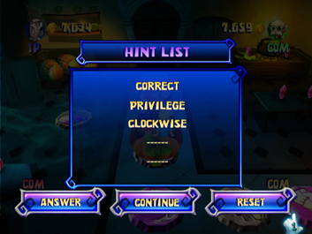
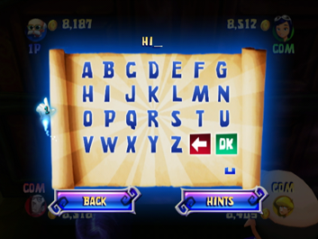

12 |
Hints, perkamentrollen en de finale |
 |
Een perkamentrol kopen Als het wagentje een perkamentvakje op het bord passeert, mag je een magische perkamentrol kopen. Als je dat doet, gaat de rol open en krijg je een aanwijzing. Koop je de rol niet, dan wordt de locatie van de volgende magische perkamentrol onthuld en rijdt het wagentje verder. Elke perkamentrol die je koopt is duurder dan de vorige: Speltype ‘Makkelijk’:
Speltype ‘Normaal’:
Speltype ‘Moeilijk’:
Nieuwe aanwijzing In dit scherm lees je de nieuwe aanwijzing nadat je een perkamentrol hebt gekocht. Hintlijst  Na de nieuwe aanwijzing verschijnt dit scherm, waarin je alle aanwijzingen ziet die je al hebt verzameld. Je kunt kiezen voor Answer (het wachtwoord invoeren), Continue (doorgaan met het spel) of Reset (de aanwijzingen en het wachtwoord terugzetten en doorgaan). Dit laatste kost 200 munten, maar pas wel op: als je te weinig munten hebt, moet je een antwoord raden of verder spelen om meer geld te verzamelen! Wachtwoord invoeren  Kies je in de hintlijst voor Answer (antwoorden), dan verschijnt het scherm waarin je het wachtwoord kunt invoeren. Voer het wachtwoord in of ga terug naar het bord om het spel voort te zetten. Kies Hints om je aanwijzingen te bekijken. Verkeerd wachtwoord Als je het verkeerde wachtwoord invoert, wordt de locatie van de volgende magische perkamentrol onthuld en krijg je een boete van 200 munten. Als je echter al vijf perkamentrollen hebt, moet je nogmaals proberen het juiste wachtwoord in te voeren of alle aanwijzingen en het wachtwoord terugzetten (dit kost 200 munten). Gefeliciteerd! Als je het juiste wachtwoord hebt ingevoerd, verschijnt een scherm met een felicitatie. Daarna moet je nog een laatste minispel spelen. Finale Als de schat is gevonden, moeten de vier spelers het laatste minispel spelen: de finale. Dit spel lijkt op ‘Rennen maar’ (zie de paragraaf ‘Het speltype Mini-Games (minispellen)’ voor meer informatie). Je moet ook nu de Wii-afstandsbediening horizontaal houden en je kunt opnieuw op de 2-knop drukken voor een draaiaanval. Toch is er een aantal belangrijke verschillen tussen de twee minispellen, zoals de spelkaart. Andere belangrijke kenmerken van de finale die anders zijn dan ‘Rennen maar’: 1) Als een speler wordt geraakt door een geest verliest hij/zij wat munten, maar hij/zij hoeft het spel niet te verlaten; 2) Je wordt aangevallen door ridders. Als je wordt geraakt, verlies je wat munten; 3) Je beginscore van dit minispel is het totaal aan geld dat je tot dan toe hebt verzameld. |
 |
 |
 |